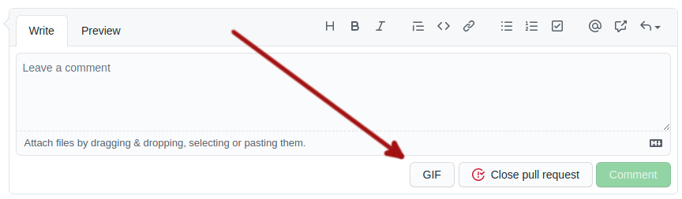

How to use
Visit your favourite Github repository and visit a pull-request or issue. Any time you see an input for your comments, you should see a GIF button in the action bar.
Clicking that button will reveal a sidebar to search for a GIF. Type in a search term and hit the ENTER key. Find the GIF you want and click on it. The appropriate markdown will be added to the comment input. You're done!